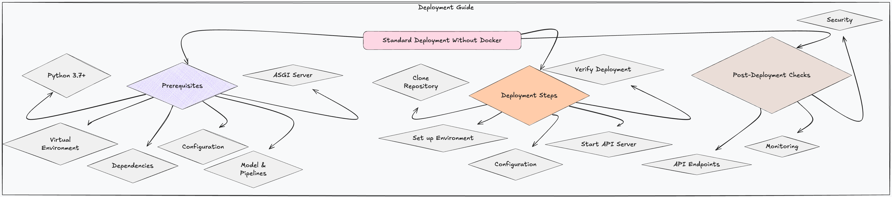

Standard Deployment Guide
This guide provides comprehensive instructions for deploying the HDI Claims Prediction API. The API is built using FastAPI and utilizes a pre-trained Scikit-learn model. This document covers both standard deployment without Docker as well as deployment using a Docker image.

Prerequisites
Python 3.7+
Ensure you have Python 3.7 or a later version installed on your system.
Virtual Environment (Recommended)
Create and activate a virtual environment to isolate your project dependencies:
python3 -m venv .venv
source .venv/bin/activate # Activate (Linux/macOS)
.venv\Scripts\activate # Activate (Windows)
Dependencies
Install the required project dependencies using the following command:
pip install -r requirements/requirements.txt
Configuration
Configure the application via the config/config.yaml file, which contains essential settings such as API configurations, model paths, and logging options. Set the CONFIG_PATH environment variable to the directory containing config.yaml:
# For Linux/macOS, consider adding this to your `.bashrc` or `.zshrc` for persistence
export CONFIG_PATH=config
# For Windows, use `setx` for a persistent environment variable (requires admin privileges)
set CONFIG_PATH=config
setx CONFIG_PATH config /M # You may need to restart your terminal for changes to take effect
Model and Pipelines
Ensure the following files and directories are set up in your project directory:
- Trained Model: models/linear_regression.pkl
- Preprocessing Pipelines: pipes/*.pkl
- Imputation Dictionary: artifacts/imputations.json
ASGI Server
Use Uvicorn for development and testing or Gunicorn for production to serve the FastAPI application.
Deployment Steps
Standard Deployment (Without Docker)
-
Clone the Repository Clone the API repository to your deployment environment:
bash git clone <repository-url> cd <repository-directory> -
Set up the Environment Create and activate a virtual environment, then install dependencies:
bash python3 -m venv .venv source .venv/bin/activate # for Linux/macOS .venv\Scripts\activate # for Windows pip install -r requirements/requirements.txt -
Configuration Set the
CONFIG_PATHenvironment variable to point to the directory containingconfig.yaml:bash export CONFIG_PATH=config # Linux/macOS set CONFIG_PATH=config # Windows -
Start the API Server
- For Development/Testing (with Uvicorn and auto-reload):
bash uvicorn api.main:app --host 127.0.0.1 --port 8000 --reload -
For Production (with Gunicorn and multiple workers):
bash gunicorn -w 4 -k uvicorn.workers.UvicornWorker api.main:app -b 0.0.0.0:8000Use a process manager like Supervisor or systemd to manage Gunicorn for automatic restarts. -
Verify Deployment Access the API root endpoint (e.g.,
http://127.0.0.1:8000/or your server IP) to ensure the API is running correctly.
Docker Deployment (Recommended for Production)
- Create a
DockerfileHere is an exampleDockerfileto build a Docker image for the API: ```dockerfile FROM python:3.11-slim
WORKDIR /app
COPY . .
# Upgrade and install dependencies RUN apt-get update && apt-get install -y --no-install-recommends \ build-essential \ libpq-dev \ gcc \ && apt-get clean && rm -rf /var/lib/apt/lists/*
RUN pip install --no-cache-dir -r requirements/requirements.txt
ENV HOST="0.0.0.0" \ PORT="8000" \ CONFIG_PATH="../config"
EXPOSE ${PORT}
# Run the app CMD ["uvicorn", "api.main:app", "--host", "${HOST}", "--port", "${PORT}"] ```
-
Build the Docker Image Build the Docker image using the following command:
bash docker build -t hdi-claims-api . -
Run the Docker Container Run the Docker container with the following command:
bash docker run -d -p 8000:8000 hdi-claims-api -
Verify Deployment Access the API root endpoint (e.g.,
http://localhost:8000or your server IP) to ensure the API is running correctly within the Docker container.
Post-Deployment Checks (Applicable to Both Deployment Methods)
- API Endpoints: Thoroughly test all API endpoints to ensure they function as expected.
- Monitoring: Set up monitoring to track the API's performance and availability.
- Security: Implement security measures such as HTTPS, firewalls, and proper authentication & authorization mechanisms.